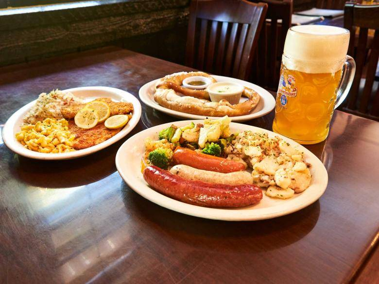
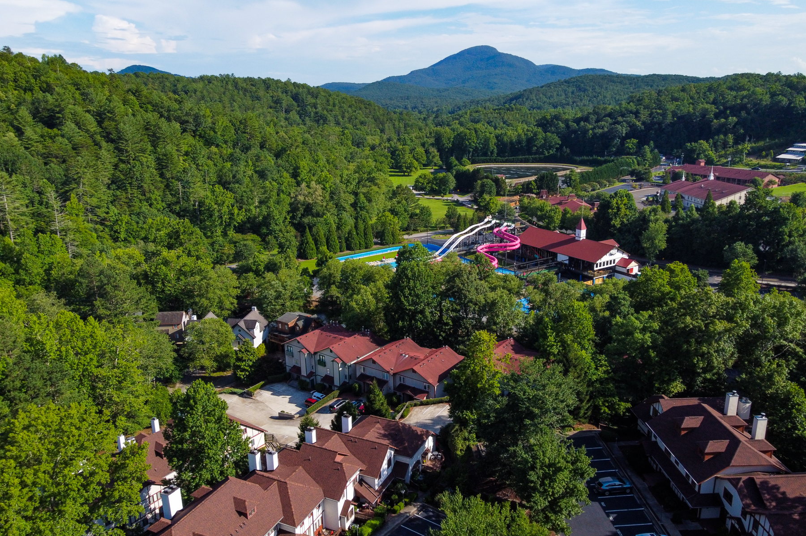

Dining
Pretzels to Pizza to Porterhouse
From a broad selection of “rathskellers” boasting traditional German cuisine to a wide variety of eateries designed to satisfy an array of appetites, be sure to come to Helen HUNGRY! Stroll down the sidewalk with an ice cream cone in your hand, dine al fresco within view of the water or enjoy a romantic dinner by candlelight. Raise a pint to a collection of palatable possibilities that are virtually endless!
Lodging
From cozy cabins to luxurious hotels, Helen offers a range of accommodations
Stay at the heart of the action in downtown Alpine Helen or escape to the peace and quiet of a scenic mountain retreat. Take your pick of charming bed and breakfasts, quaint alpine-themed motels, cozy cabins, a vibrant collection of vacation rentals or a luxury boutique hotel. No matter where you elect to rest your head, you’ll have the unique opportunity to wake up to the beauty and excitement of our distinctive Bavarian-inspired destination.
